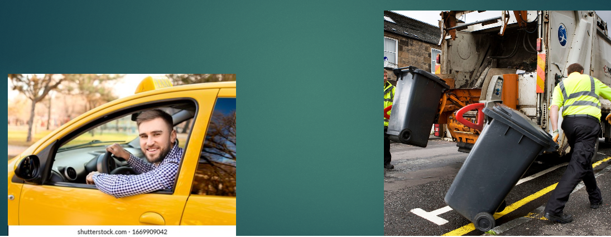
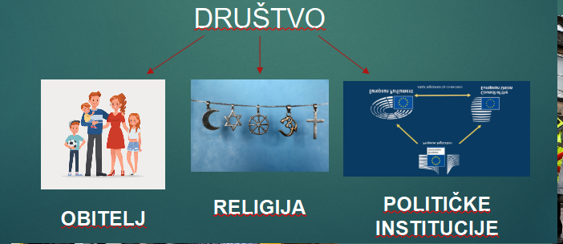
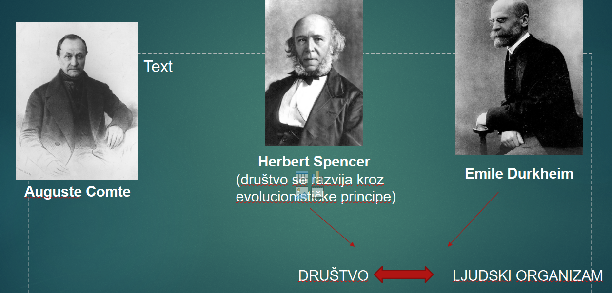
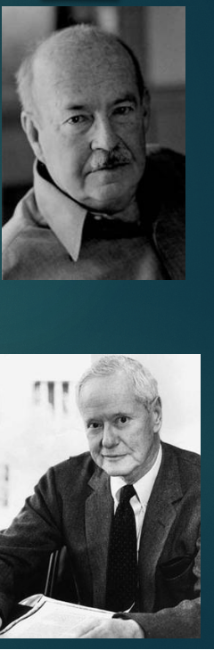
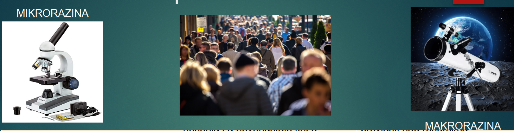
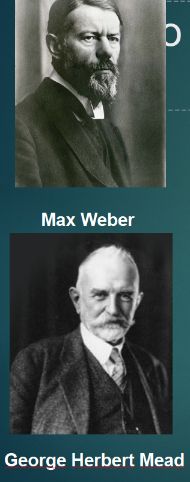
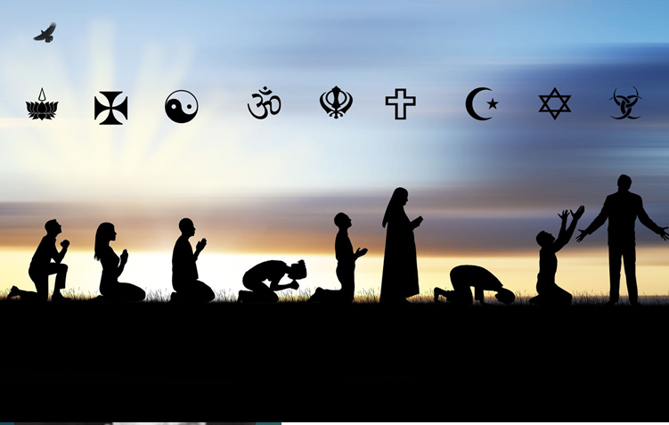

STRATIFIKACIJSKI SUSTAVI KROZ POVIJEST
SOCIOLOŠKE PERSPEKTIVE O STRATIFIKACIJI
FUNKCIONALISTIČKA PERSPEKTIVA
Društvo je sistem
Različiti dijelovi društva pridonose redu i stabilnosti
Tako f. p. promatra i startifikaciju – kako startifikacija pridonosi dobrom funkcioniranju
Društvo se sastoji od različitih društvenih položaja koji su različito rangirani (neki položaji su bitniji za dobro funkcioniranje društva – zahtjevaju više talenata, znanja...)
Za motivaciju pojedinaca da razvijaju svoje vještine koriste se visoke plaće
Oni koji se ne trude i ne ulažu i svoje znanje, obavljaju poslove koji nisu toliko bitni za funkcioniranje društva
Po tome proizlazi stratifikacija u društvu – oni s visokim plaćama su na vrhu startifikacijske ljestivice i obrnuto
MERITOKRATSKO DRUŠTVO – društvo vrednuje pojedince na objektivan način, prema zalaganju, trudu...
KONFLIKTNA PERSPEKTIVA
Stratifikacija ne integrirara društvo,već ga dijeli
Teoretičari smatraju da uvijek postoji vladajuća klasa i podređena klasa
Vladajuća klasa se služi stratifikacijom kako bi držala u pokornosti ostale dijelove društva i provodila svoje interse i vrijednosne sustave
U društvu će uvijek postojati zategnuti odnosi između poslodavaca i radnika
Društveni resursi: moć, ugled, bogatstvo
Neravnomjerno raspoređeni
Nejednakosti koje nastaju kao posljedica fizičkih karakteristika (visok – nizak, plav – crn…) ili koje nastaju kao posljedica osobina, tjelesne ljepote ili nadarenosti pojedinca ili nejednakosti koje nastaju kao posljedica obavljanja različitih funkcija koje imamo u društvu (frizer, stolar, menadžer…) nazivamo DRUŠTVENA DIFERENCIJACIJA
Nejednakost koja se odnosi na obavljanje različitih funkcija i uloga koje imamo u društvu jer ne možemo imati svi iste uloge, funkcije i položaje u društvu.
To je nejednakost koju ne vrednujemo.
Ako pripadnike jedne rase segregiramo u odnosu na drugu rasnu skupine, takav tip nejednakosti zovemo DRUŠTVENA STRATIFIKACIJA
Javlja kada postoji jedna skupina koja je iznad druge skupine
Prisutna kroz dugi niz godina
Ne postoji društvo koje nema društvenu stratifikaciju osim možda lovačko sakupljačkih društava
DRUŠTVENA STRATIFIKACIJA trajni je oblik nejednakosti koji se odnosi na društvene skupine koje su hijerarhijske poredane
Osnovna komponenta društvene stratifikacije je DRUŠTVENI SLOJ (socijalni stratum)
Odnosi se na skupinu pojedinaca koji imaju slične životne šanse.
Pripadnici određenog društvenog sloja su povezani odnosim i interakcijama koji ih čine ZBILJSKOM I KOHEZIVNOM društvenom grupom – određeni društveni sloj utječe na najvažnije aspekte života tih ljudi – očekivano trajanje života, obiteljski život, obrazovanje, religiju, politiku i njihove statove
FUNKCIONALISTIČKA PERSPEKTIVA KONFLIKTNA PERSPEKTIVA
Društvo je sistem
Različiti dijelovi društva pridonose redu i stabilnosti
Tako f. p. promatra i startifikaciju – kako startifikacija pridonosi dobrom funkcioniranju
Društvo se sastoji od različitih društvenih položaja koji su različito rangirani (neki položaji su bitniji za dobro funkcioniranje društva – zahtjevaju više talenata, znanja...)
Za motivaciju pojedinaca da razvijaju svoje vještine koriste se visoke plaće
Oni koji se ne trude i ne ulažu i svoje znanje, obavljaju poslove koji nisu toliko bitni za funkcioniranje društva
Po tome proizlazi stratifikacija u društvu – oni s visokim plaćama su na vrhu startifikacijske ljestivice i obrnuto
MERITOKRATSKO DRUŠTVO – društvo vrednuje pojedince na objektivan način, prema zalaganju, trudu...
Stratifikacija ne integrirara društvo,već ga dijeli
Teoretičari smatraju da uvijek postoji vladajuća klasa i podređena klasa
Vladajuća klasa se služi stratifikacijom kako bi držala u pokornosti ostale dijelove društva i provodila svoje interse i vrijednosne sustave
U društvu će uvijek postojati zategnuti odnosi između poslodavaca i radnika
MOĆ
Vjerojatnost da pojedinac ili grupa ljudi uspije nametnuti svoju volju usprkos otporu drugih
Pojedinac ima moć ako uspije nagovoriti nekoga da nešto napravi iako on to ne želi
TEORIJA ELITE I PLURALISTIČKA TEORIJA
TEORIJA ELITE
Govori o tome da isti pojedinci konstantno imau moć u svojim rukama,a to su pojedinci koji sjede na vrhu osnovnih društvenih institucija kao što su vojne institucije, političke i ekonomske institucije
Oni donose odluke i utječu na sve nas
... Drugi teoretičari smatraju da je moć prisutna u svakome od nas, samo je pitanje na koji način je upotrebljava – PLURALISTIČKA TEORIJA
Bogatstvo
Dobro koje određeno društvo definira kao vrijedno
https://www.youtube.com/watch?v=QPKKQnijnsM&ab_channel=politizane
Bogatstvo čine: VLASNIŠTVO, DOHODAK I ŽIVOTNI STANDARD
1. vlasništvo – nekretnine, sredstva za proizvodnju (tvornica ili zemlja), ušteđevina, mirovina, dionice
2. dohodak - zarada. Temelji se na kvalifikacijama i vještinama na tržištu radne snage
Danas je često raslojavanje...
3. životni standard – stanovanje, način prehrane, odjeća, pristup liječniku
ugled
Količina časti ili poštovanja povezana s društvenim položajem
Visoki ugled:
Položaji s niskim ugledom:

Položaj je uvijek povezan s bogatstvom, obiteljskim vezama, društvenim vezama i obrazovnim postignučima
Obrazovna startifikacija – promatramo skupine od osnovnog obrazovanja do visokog obrazovanja
Startifikacijske razlike u obrazovnom sustavu?
Viši slojevi imaju veću šansu za viša obrazovna postignuća
Statusne nedosljednosti – nepoklapanje bogatstva, moći i ugleda s obzirom na društveni položaj (šef kriminalne organizacije...)
Socijalna stratifikacija u Hrvatskoj – podijelite na društvene slojeve i tipična zanimanja za određeni društveni sloj
SOCIJALNA MOBILNOST
Pokretljivost pojedinca u društvu
VERTIKALNA MOBILNOST HORIZONTALNA MOBILNOST
Kretanje na stratifikacijskoj ljestvici
Može biti prema gore ili prema dolje
MEĐUGENERACIJSKA MOBILNOST (roditelj kovinotokar, a dijete liječnik)
UNUTARGENERACIJSKA MOBILNOST (karijera pojedinca
Kretanje u prostoru, selidbe
migracije
ZATVORENI TIP DRUŠTVA – ne dozvoljava promjenu društvenih položaja – npr. kaste
OTVORENI TIP DRUŠTVA – ono gdje je pojedinac rođen na stratifikacijskoj ljestivici neće utjecati na to gdje će pojedinac završiti
Temeljne sociološke perspective
FUNKCIONALISTIČKA PERSPEKTIVA (FUNKCIONALIZAM)
Polazi od stava da se društvo sastoji od dijelova – struktura (STRUKTURNI FUNKCIONALIZAM)
DRUŠTVO

Funkcionalizam smatra da svi dijelovi pridonose društvu u cjelini
Zahvaljujući funkcioniranju dijelova društva, postiže se stabilnost cjeline i stabilnost cijelog društva
Primjer: obitelj
Funkcionalisti smatraju da je obitelj vrlo bitna nositeljica društvenih funkcija (reproduktivne, socijalizacijske, ekonomske, emocionalne funkcije…)
Funkcionalizam smatra da je društvo složen sustav čiji dijelovi nastoje stvoriti stabilnost i solidarnost
Teoretičari koji su utjecali na funkcionalističku perspektivu

Društvo da bi opstalo mora stvoriti mogućnost da svi ti dijelovi unutar društva funkcioniraju
TALCOTT PARSONS – američki sociolog funkcionalističke perspective smatra da društvo treba promatrati kao sustav koji je sastavljen od međusobno povezanih dijelova
Da bi ti dijelovi funkcinirali, potrebno je stvoriti “most”, razinu suglasja, odnosno KONSENZUS (osnovna ideja koja omogućava opstanak društva)
S druge strane, ROBERT K. MERTON smatra da društvo treba promatrati kroz dvije funkcije: MANIFESTNE I LATENTNE FUNKCIJE

Manifestne funkcije – očite i namjeravane posljedice djelovanja
Latentne funkcije – nenamjerne i nepredviđene posljedice djelovanja
Pr. Mjere protiv Covida i mentalno zdravlje
to ako nam se dogode disfunkcionalne posljedice?
Mogu li disfunkcionalne posljedice pomoći u opstanku i razvoju društva?
Primjer siromaštva…
Siromaštvo je veliki društveni problem, no zbog postojanja siromaštva moguće su neke ekonomske funkcije i mnogi poslovi za koje bi inače bilo teško pronaći radnu snagu
Siromaštvo povlači niz profesija kojih ne bi bilo da siromaštvo ne postoji (socijalni radnici, kriminolozi, odvjetnici…)
KONFLIKTNA TEORIJA
Kao i funkcionalistička, pripada makrosociološkom pristupu proučavanja društva
Funkcionalisti polaze od pretpostavke da je za funkcioniranje društva bitan sklad i konsenzus, dok konfliktna perspektiva smatra da je za pozitivne društvene promjene često nužan SUKOB, odnosno KONFLIKT
TEORETIČAR KOJI JE UTJECAO NA KONFLIKTNU PERSPEKTIVU
Iako se nije smatrao sociologom, njegove terojeske rasprave su snažno utjecale na razvoj sociologije
Tri teorije:
TEORIJA REVOLUCIJE/KOMUNIZAM
HISTORIJSKI MATERIJALIZAM
Marx smatra da nisu vrijednosti, ideje ili religije bile presudne za razvoj čovječanstva
Presudan je bio odnos u proizvodnji, koncept proizvodnog materijalnog života
Marx povijest vidi kao proces u kojem se zakonito izmjenjuju društveno-ekonomske formacije (robovlasništvo, feudalizam, kapitalizam), a one su određene isključivo stupnjem razvoja materijalnih proizvodnih snaga
Po Marksu, feudalci, vlasnici zemljišta i kapitalisti su zajedno uklješteni u borbi protiv vladavine radničke klase. Ova tvrdnja je sažeta u u poznatoj uvodnoj misli uvodnika u KOMUNISTIČKOM MANIFESTU:
"Historija svih do sada postojećih društava je historija borbe klasa." Marks je predvidio propast kapitalizma kroz revoluciju radničke klase koja bi dovela do utopijskog "besklasnog društva"
ALIJENACIJA/OTUĐENJE
U kontekstu otuđenja od proizvoda svoga rada
Čovjek kao radno proizvodno biće u periodu kapitalističke proizvodnje biva otuđen od krajnjeg proizvoda svoje kreacije
Prema Marxu to dovodi do osjećaja alijenacije što se kasnije prelijeva u ostale sfere društvenoga i privatnoga života
TEORIJA REVOLUCIJE/KOMUNIZAM
Živio u 19. st.
Vrijeme kada su revolucije neminovne
Prema njemu, revolucije će dokinuti sve dotadašnje koncepcije KAPITALISTIČKOGA USTROJA, te će nastupiti društvo jednakih i ravnopravnih ljudi koje on naziva KOMUNIZMOM
Takvo učenje preuzeli pojedini politički poretci u 20. st.
Temeljne sociološke perspektive:
INTERAKCIONISTIČKA PERSPEKTIVA
mikrorazina/makrorazina
U sociologiji se proučavaju različiti aspekti društvenog života
Ponekad je to interacija učenika u razredu, a ponekad se proučava na koji način obrazovni sustav djeluje na učenike
Ovisno o vrsti analize kojom gledamo društvo, društvo proučavamo na makro ili mikrorazini

Ako društvo proučavamo na makrorazini, onda proučavamo velike grupe, institucije ili društvenu strukturu (obrazovanje, religija, klase, na koji način nova tehnologija utječu na strukturu radne snage)
Ako se društvo proučava na mikrorazini, onda se proučavaju interakcije malih razmjera (dnevne aktivnosti pojedinaca, npr. Razgovor između učenika i profesora)
INTERAKCIONISTIČKA PERSPEKTIVA (INTERAKCIONIZAM)
Proučava društvo na mikrorazini
Proučava pojedince i njihove interakcije
Interakcije licem u lice (face to face)
Iz interakcija među pojedincima nastaje i održava se društvo
Interkacionizam se fokusira na vrlo detaljne, specifične aspekte svakodnevnog života pojedinca (na koji način neki pojedinac postaje devijantan?, zašto neki pojedinci postaju devijantni, a neki ne postaju devijantni?, kako izgleda process odlučivanja u nekoj grupi?,
a bi neki čin bio shvatljiv nama ostalima,
moramo otkriti kakvo on značenje ima za same aktere
Interakcionistička perspektiva pokušava otkriti na koji način mi pridajemo značenja, na koji način interpretiramo simbole
Za interakcioniste društvo kao realnost ni ne postoji
Društvo se svaki put nanovo stvara kroz naše interakcije
Mi našim interakcijama stvaramo društvo i mijenjamo ga
Weber utjecao na razvoj interakcionističke perspektive
Smatrao da društvo možemo razumijeti ako razumijevamo individualne motive svakog pojedinca koji sudjeluje u društvenom djelovanju
Moramo razumijeti motive pojedinaca i ući u subjektivne aspekte djelovanja
George Herbert Mead razvio teoriju SIMBOLIČKOG INTERAKCIONIZMA
Pojedinci ne žive samo u svojoj fizičkoj okolini, nego žive u svojoj simboličkoj okolini
U našem svakodnevnom životu pridajemo različita značenja stvarima koje nas okružuju (slikama, zvukovima, pojavama, procesima
Mi stalno pridajemo značenja i na temelju toga se onda ponašamo

